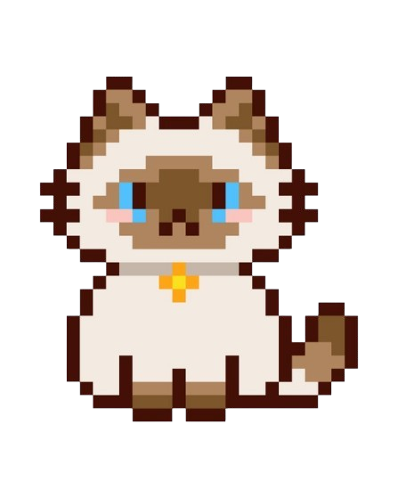

El mundo de los gatos
Los gatos poseen uno de los sistemas auditivos más sofisticados del planeta;
pueden oir sonidos de hasta 64 kHz (los humanos solo llegamos a 20 kHz) y
tienen la capacidad de rotar sus orejas 180 grados de forma independiente
para localizar el origen exacto de un ruido.
🐈Datos interesantes sobre los gatitos
- Tienen buen oido: Pueden esuchar sonidos que nosotros
no escuchamos facilmente.
Les permite escuchar frecuencias ultrasonicas que los humanos y la mayoria
de los perros no pueden percibir.
- Son muy ágiles: Pueden saltar y moverse con mucha
facilidad.
Pueden saltar hasta seis veces su propia altura y siempre caen de pie gracias
a su estructura fisica percetamente diseñada para el movimiento.
- Se comunican: Se comunican principalmente el lenguaje
corporal, las feromonas y las vocalizaciones.
Liberan feromonas desde sus mejillas,patas y orina al frotarse contra odjetos
para marcar su territorio.
- Tienen una gran memoria:
Los gatos pueden recordar lugares, personas y experiencias,
especialemente cuando están relacionadas con algo importante para ellos.